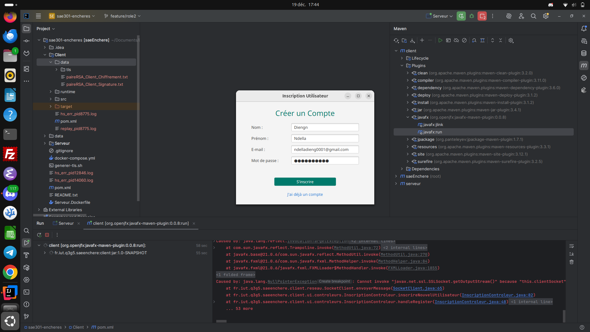

Application d’enchère sécurisée
- Durée : 5 mois
- En équipe de 5
- Académique
Développer une application d’enchères sécurisée avec une création de compte, une authentification par mail, une structure client/serveur.
Ce projet est un projet développé en Java dans lequel nous avons implémenté un système de connexion avec une authentification par mail. L’application sécurise les informations sensibles comme le mot de passe en le hashant. Certaines données sont cryptées comme le montant de l’enchère. Le front-end de l’application est en JavaFx et la structure de l’application est un modèle MVC (Modèle, Vue, Contrôleur).
- Java
- JavaFX
- MVC
